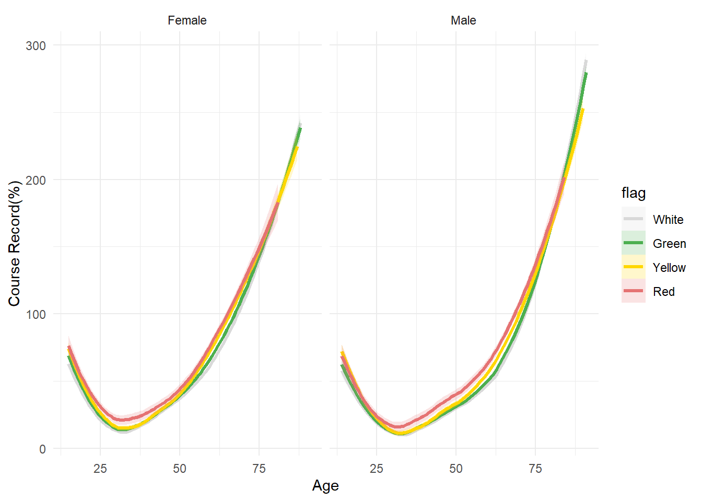

Characteristic |
Overall |
Boston |
Chicago |
Grandmas |
NYC |
Twin Cities |
|---|---|---|---|---|---|---|
| Sex | ||||||
| Female | 5,452/11564 (47%) | 984/2088 (47%) | 1,210/2553 (47%) | 934/2000 (47%) | 1,402/2930 (48%) | 922/1993 (46%) |
| Male | 6,112/11564 (53%) | 1,104/2088 (53%) | 1,343/2553 (53%) | 1,066/2000 (53%) | 1,528/2930 (52%) | 1,071/1993 (54%) |
| Age | 14 - 91 (46) | 18 - 87 (47) | 14 - 85 (46) | 14 - 86 (44) | 18 - 91 (49) | 14 - 85 (44) |
| Course Record(h) | 3.35 (1.02) | 3.13 (0.77) | 3.33 (1.04) | 3.39 (0.93) | 3.49 (1.27) | 3.35 (0.85) |
| 1
n/N (%); Min - Max (Median); Mean (SD) |
||||||
| 2
Mean (SD), Min - Max are reported for continuous variables. Count (%) for categorical variables. |
||||||
Exploring the Relationship between Environmental Conditions and Marathon Performances
Abstract
Past research revealed significant differences in marathon performance influenced by gender, age. Meanwhile, age may influence thermoregularization as well. We therefore designated to explore the impact of environmental conditions on marathon performances, including weather and air quality. Exploratory data analysis and linear regression were employed to verify the influence of weather conditions and air quality on marathon performances. We also identified relative humidity and WBGT may have have the largest impact on marathon performance.
Introduction
The factors influencing marathon performance have always been a topic of interest, and existing research has confirmed the impact of weather conditions on performance. For instance, increasing WBGT has been shown to slow marathon performance (M. R. Ely et al. 2007; B. R. Ely et al. 2010), and the effects of weather are less evident in female runners. Additionally, marathon performance exhibits differences related to age and gender: men are more likely than women to experience a slowdown during a marathon, and older runners tend to have less pace variance compared to younger runners. Moreover, masters men and women are negatively impacted by higher temperatures and humidity during the New York City marathon. Endurance performance degrades with increasing environmental temperature, and this decline in performance associated with warmer temperatures is magnified in longer-distance events such as the marathon (42.2 km). Older adults also face thermoregulatory challenges that impair their ability to dissipate heat, further exacerbating the impact of elevated temperatures. Lastly, there are well-documented sex differences in endurance performance (Besson et al. 2022) and in the physiological processes related to thermoregulation. Additionally, research has indicated the impact of age on thermoregulation (Yanovich, Ketko, and Charkoudian 2020), highlighting a reduced ability to tolerate heat stress in older individuals (Kenney and Munce 2003). However, the relationship between marathon performance and environmental conditions, particularly air quality, as well as the differences based on age and gender, remains to be explored.
Therefore, this study aims to confirm the relationships between weather conditions, air quality, and marathon performance, while further identifying the weather parameters that have the greatest impact on performance. We hypothesize that the slowing of performance would be more pronounced with high WBGT or AQI in older individuals compared to younger ones, and similar trends would be observed in both men and women. To achieve our goals, we will employ exploratory data analysis and linear regression.
Data Collection
The current study uses the data collected from marathon race results for Boston, Chicago, New York, Twin Cities, Grandma’s Marathons for 17 to 24 years, 1993-2016. To evaluate marathon performance, we extracted fastest finishing time among men and women at each year of age, compared with the course record (%CR). The data also attaches parameters that recorded local weather conditions, including Td(dry bulb temperature in Celsius), Tw(wet bulb temperature in Celsius), %rh(percent relative humidity) and so on. Wet bulb globe temperature (WGBT) is calculated by weighting these weather parameters and is regarded as a general measurement that integrate all of weather information. Additionally, another data set records local air quality by AQI of each race, which is regarded as a reflection of environmental conditions as well.
Exploratory Data Analysis
Marathon data
Next, we examined the marathon dataset, which includes participants’ age, sex, and course records. The dataset comprises a total of 11,564 observations, with records from the Boston, Chicago, New York, Twin Cities, and Grandma’s marathons. Participants’ ages range mostly between 14 and 90, with a median age of 46, and the number of male and female participants is roughly equal. There are no significant differences in marathon performance across the different events, and all the data is complete.
Environmental Data
This dataset includes environmental data from five marathon races held between the 1990s and the 2010s. The variables encompass dry bulb temperature, wet bulb temperature, relative humidity, black globe temperature, solar radiation, dew point, wind, wet bulb globe temperature (WBGT), and air quality index (AQI). WBGT is a composite weather indicator calculated based on dry bulb temperature, wet bulb temperature, and relative humidity, while AQI reflects the air quality for each race.
On average, Twin Cities has the best air quality, while Boston shows the poorest. However, the differences in air quality among cities are not statistically significant. Observing the distribution of meteorological flags across different levels reveals that most marathon races were held under “white” or “green” flag conditions, with fewer races occurring under “yellow” or “red” conditions and none under “black” conditions. This may be because extreme weather conditions prompt race organizers to cancel or postpone events.
Overall, the environmental data has minimal missingness, with only a few cities lacking data for specific years. For further analysis, these missing cases could be addressed by excluding them directly to simplify the process.
Characteristic |
Overall |
Boston |
Chicago |
Grandmas |
NYC |
Twin Cities |
|---|---|---|---|---|---|---|
| Year | 1,993 - 2,016 | 1,998 - 2,016 | 1,996 - 2,016 | 2,000 - 2,016 | 1,993 - 2,016 | 2,000 - 2,016 |
| Flag | ||||||
| White | 31/92 (34%) | 9/18 (50%) | 6/20 (30%) | 0/16 (0%) | 11/22 (50%) | 5/16 (31%) |
| Green | 39/92 (42%) | 7/18 (39%) | 12/20 (60%) | 6/16 (38%) | 7/22 (32%) | 7/16 (44%) |
| Yellow | 17/92 (18%) | 1/18 (5.6%) | 1/20 (5.0%) | 8/16 (50%) | 4/22 (18%) | 3/16 (19%) |
| Red | 5/92 (5.4%) | 1/18 (5.6%) | 1/20 (5.0%) | 2/16 (13%) | 0/22 (0%) | 1/16 (6.3%) |
| Black | 0/92 (0%) | 0/18 (0%) | 0/20 (0%) | 0/16 (0%) | 0/22 (0%) | 0/16 (0%) |
| Unknown | 4 | 0 | 1 | 1 | 1 | 1 |
| Dry bulb temperature | 13.35 (5.86) | 11.59 (6.02) | 12.43 (6.23) | 18.86 (3.42) | 11.73 (4.80) | 13.19 (5.73) |
| Unknown | 4 | 0 | 1 | 1 | 1 | 1 |
| Wet bulb temperature | 9.46 (5.41) | 7.56 (3.89) | 8.56 (5.85) | 14.90 (2.52) | 7.57 (5.11) | 9.90 (5.61) |
| Unknown | 4 | 0 | 1 | 1 | 1 | 1 |
| Relative humidity | 42.11 (32.32) | 34.90 (35.24) | 60.57 (10.75) | 48.85 (35.52) | 26.84 (31.16) | 41.37 (35.41) |
| Unknown | 4 | 0 | 1 | 1 | 1 | 1 |
| Black globe temperature | 25.02 (7.77) | 24.18 (8.54) | 24.55 (6.45) | 31.60 (8.13) | 21.37 (6.10) | 25.01 (6.76) |
| Unknown | 4 | 0 | 1 | 1 | 1 | 1 |
| Solar radiation | 517.88 (189.77) | 653.95 (191.28) | 459.71 (96.34) | 679.29 (195.28) | 401.18 (133.99) | 436.53 (142.93) |
| Unknown | 4 | 0 | 1 | 1 | 1 | 1 |
| Dew point | 5.53 (6.97) | 3.34 (4.55) | 4.69 (7.07) | 12.42 (3.27) | 2.73 (7.17) | 6.02 (7.51) |
| Unknown | 4 | 0 | 1 | 1 | 1 | 1 |
| Wind | 9.93 (4.08) | 11.98 (4.57) | 8.17 (3.29) | 9.19 (2.95) | 11.22 (4.68) | 8.81 (3.30) |
| Unknown | 4 | 0 | 1 | 1 | 1 | 1 |
| Wet bulb globe temperature | 12.96 (5.62) | 11.29 (4.61) | 12.14 (5.92) | 18.64 (3.32) | 10.74 (5.04) | 13.25 (5.56) |
| Unknown | 4 | 0 | 1 | 1 | 1 | 1 |
| Air Quality Index | 36.15 (14.70) | 42.25 (15.53) | 38.74 (12.78) | 37.24 (16.05) | 32.47 (14.19) | 30.39 (13.52) |
| 1
Min - Max; n/N (%); Mean (SD) |
||||||
| 2
Mean (SD), Min - Max are reported for continuous variables. Count (%) for categorical variables. |
||||||
Correlation between environmental data
We analyzed the correlation among weather variables and found, as shown in Figure 1, that dew point (DP) is highly correlated with WBGT, making it suitable for exclusion from the analysis. Furthermore, since WBGT is a composite index that incorporates the effects of dry bulb temperature (Td), wet bulb temperature (Tw), and black globe temperature (Tg), these variables are also highly correlated with WBGT and can be excluded. In contrast, the remaining variables, including relative humidity (rh), solar radiation (SR), and wind, show lower correlations with one another and are retained for further analysis.
Effects of sex and age on marathon performance
To explore the impact of gender and age on marathon performance, we analyzed race data and visualized performance across different age groups and genders. To compare the performance between male and female, we first converted course records from percentage unit to seconds unit, then used LOESS (Locally Estimated Scatterplot Smoothing) method in R to fit a smooth curve in scatterplots. Similar approaches were utilized in other exploratory analysis. As shown in Figure 2, marathon performance follows a J-shaped curve with age: it improves steadily, peaking around 35 years old, and then declines as physical abilities deteriorate with aging. At any age, men, on average, outperform women in marathon performance. However, the gender difference varies with age. Data from the Chicago, NYC, and Grandma’s marathons reveal that this difference peaks around age 60 but narrows both before and after this point. In contrast, data from the Boston and Twin Cities marathons show that the gender gap does not return to similar levels as age increases. Instead, it either remains constant or continues to widen. This complex relationship warrants further investigation.

Effects of Weather Conditions on marathon performances
WBGT impacts
Next, we turn our attention to the effect of WBGT on marathon performance. WBGT is a composite index that combines the effects of dry bulb temperature (Td), wet bulb temperature (Tw), and black globe temperature (Tg). Conceptually, WBGT serves as a measure to estimate the combined impact of temperature, humidity, wind speed, and solar radiation on humans. It is widely used to assess heat stress during physical activities in outdoor environments, such as marathons. Higher WBGT levels indicate more stressful conditions, suggesting that as WBGT increases, it becomes more difficult for runners to complete a marathon efficiently.
To examine this relationship, we plotted the effect of WBGT on marathon completion time, stratified by sex. Rather than using WBGT as a continuous measure, we employed the “Flag” column as a proxy for WBGT levels. The “Flag” column is a categorical variable indicating WBGT levels, with White representing the lowest stress level and Black representing the highest. As depicted in Figure 3, completion times increase progressively with higher WBGT levels, supporting the hypothesis that heat stress significantly hinders performance.
Interestingly, the analysis revealed a gender difference in adaptation to extreme conditions. Men appear to be more affected by extreme WBGT levels than women, particularly under red-level WBGT conditions. The increase in completion time for men is noticeably greater than for women, especially in the 35–65 age group. This suggests that men in this age range may be more vulnerable to the adverse effects of extreme weather, highlighting the need for further investigation into the underlying causes of these differences.

Relative humidity impacts
We also explored the impact of relative humidity (rh) on marathon performance. As shown in Figure 4, relative humidity within the 0–50 range appears to have some influence on marathon performance, with the effect being most pronounced among older adults aged 80 and above. For this age group, marathon completion time is fastest when relative humidity is around 25, while both excessively high and low humidity levels increase completion time. In comparison, other age groups are less affected by relative humidity, with their performance curves remaining relatively flat. This discrepancy may stem from older runners having reduced metabolic efficiency, meaning that humidity levels could indirectly affect energy circulation during running, thereby impacting completion time. Alternatively, this trend might reflect the small sample size for this age group, where a few outliers could disproportionately influence the overall pattern.
Additionally, the effect of relative humidity differs little between men and women. They all tend to have a cubic relationship with relative humidity.

Wind impacts
Similarly, we examined the effect of wind speed on marathon performance. As shown in Figure 5, wind speed has a relatively small impact on marathon performance, with performance remaining largely unchanged across different wind levels for all age groups. Additionally, there is little difference in performance between men and women at varying wind speeds, indicating that wind speed does not have a significant differential impact on marathon performance based on gender.
Solar Radiation Impacts
We also explored the impact of solar radiation (SR) on marathon performance. As shown in Figure 6, for older individuals, marathon performance tends to improve with higher solar radiation. In contrast, the effect is less noticeable in younger age groups, where completion times remain relatively stable across varying levels of solar radiation. This finding is somewhat counterintuitive, and we suspect that the small sample size in the older age groups may have contributed to the observed variability. Furthermore, the effect of solar radiation shows significant differences between genders. This suggests that the impact of relative humidity on marathon performance varies by gender, potentially reflecting differences in environmental adaptability between men and women.
Finding The Most Effective Weather Parameter
To identify the most effective weather parameter, we used linear regression to quantify the effects of various weather variables. We began with a saturated model that included WBGT, rh, SR, wind, age, sex, and the interactions of age and sex with each of the other variables. To refine the model, we applied step wise regression to systematically remove non-significant interaction terms. We used ANOVA to justify our variable selections.
After this process, we arrived at a final model that included WBGT, rh, SR, age, sex, and the interaction terms age * (WBGT + rh + SR). We then extracted the coefficients and p-values for each variable. The results revealed that the main effect of WBGT was the strongest weather parameter influencing marathon performance. For each unit increase in WBGT, the marathon completion rate increased by 0.7599, suggesting that higher WBGT positively affects performance.
Relative humidity (rh) was found to be the most significant interaction term. The coefficient for the interaction between rh and age was -0.0066, indicating that as age increases, the negative effect of relative humidity on marathon performance becomes more pronounced. Specifically, this negative coefficient suggests that for older participants, higher humidity levels lead to a greater decrease in performance.
| Estimate | Std. Error | t value | P value | |
|---|---|---|---|---|
| WBGT | 0.7599203 | 0.1606748 | 4.729555 | 0.0000023 |
| rh | 0.2833237 | 0.0300667 | 9.423175 | 0.0000000 |
| SR | 0.0430045 | 0.0054758 | 7.853617 | 0.0000000 |
| age | 2.6603884 | 0.0701670 | 37.915068 | 0.0000000 |
| sexMale | -4.8096322 | 0.6008337 | -8.004931 | 0.0000000 |
| WBGT:age | -0.0048466 | 0.0032459 | -1.493152 | 0.1354258 |
| rh:age | -0.0065661 | 0.0005991 | -10.960677 | 0.0000000 |
| SR:age | -0.0011102 | 0.0001098 | -10.109251 | 0.0000000 |
Discussion
In this report, we examined the influence of both internal factors (age, sex) and external factors (weather variables) on marathon performance. By analyzing data from five major marathons, we identified several key findings regarding the physiological and environmental impacts on marathon completion times.
Our analysis showed that while male and female runners have distinct race performances, with men generally finishing faster, weather conditions impact both genders similarly. This suggests that the performance gap is largely due to physiological differences rather than varying sensitivities to weather. This aligns with (M. R. Ely et al. 2007), who observed similar weather-related performance declines in male and female elite runners. However, weather conditions had different effects across age groups. Among weather variables, WBGT (Wet Bulb Globe Temperature) had the strongest influence on marathon completion, with a 0.7599 increase in completion rate and relative humidity has a -0.0066 adjustment for age with each unit increase in WBGT. This supports (B. R. Ely et al. 2010), who found that aerobic performance declines in hot environments, even with modest hyperthermia.
Relative humidity (RH) and solar radiation (SR) also impacted performance, though to a lesser extent, while wind speed showed a unique pattern. While its direct effect on performance was relatively minor, it exhibited the strongest interaction with age among all weather variables, suggesting that older runners may be particularly sensitive to wind conditions. This age-dependent sensitivity likely reflects the reduced thermoregulatory capacity and cardiovascular adaptability observed in older adults.
The progressive impact of increasing WBGT on performance across all age groups supports the concept of a “prescriptive zone” for temperature regulation during exercise, as described by (M. R. Ely et al. 2007). When environmental conditions push runners outside this zone, performance inevitably declines as the body struggles to maintain thermal balance. This is evident in our findings, which show that the impact of adverse weather conditions increases with both age and completion time, indicating that slower runners face compounded challenges due to prolonged exposure to unfavorable weather.
A limitation of our analysis is that the dataset only includes weather variables, without accounting for other critical factors such as training status, nutrition, and overall health. Furthermore, the smaller sample sizes in the youngest (10-19) and oldest (80-99) age groups may affect the reliability of our results for these populations. Future research should incorporate these additional factors and ensure more balanced representation across age groups.
These findings have significant implications for runners, race organizers, and medical personnel. Race organizers should consider developing age-specific guidelines for weather-based race modifications, rather than applying uniform standards across all participants. Runners, especially older athletes or those expecting longer completion times, should adjust their strategies and performance expectations based on weather conditions, with particular attention to WBGT forecasts. Future research could focus on creating more accurate models to predict individual performance decrements based on both personal factors (age, sex, fitness level) and environmental conditions.
References
Besson, T., R. Macchi, J. Rossi, C. Y. Morio, Y. Kunimasa, C. Nicol, and G. Y. Millet. 2022. “Sex Differences in Endurance Running.” Sports Medicine 52 (6): 1235–57.
Ely, B. R., S. N. Cheuvront, R. W. Kenefick, and M. N. Sawka. 2010. “Aerobic Performance Is Degraded, Despite Modest Hyperthermia, in Hot Environments.” Med Sci Sports Exerc 42 (1): 135–41.
Ely, M. R., S. N. Cheuvront, W. O. Roberts, and S. J. Montain. 2007. “Impact of Weather on Marathon-Running Performance.” Medicine and Science in Sports and Exercise 39 (3): 487–93.
Kenney, W. L., and T. A. Munce. 2003. “Invited Review: Aging and Human Temperature Regulation.” Journal of Applied Physiology 95 (6): 2598–2603.
Yanovich, R., I. Ketko, and N. Charkoudian. 2020. “Sex Differences in Human Thermoregulation: Relevance for 2020 and Beyond.” Physiology 35 (3): 177–84.
Code Appendix
library(tidyverse)
library(ggplot2)
library(knitr)
library(kableExtra)
library(lubridate)
library(patchwork)
library(gt)
library(gtsummary)
library(broom)
# Load and process marathon race records
record <- read.csv("course_record.csv") %>%
mutate(Race = case_when( # Recode race names based on abbreviation
Race == "B" ~ "Boston",
Race == "C" ~ "Chicago",
Race == "NY" ~ "NYC",
Race == "TC" ~ "Twin Cities",
Race == "D" ~ "Grandmas"),
Gender = case_when( # Recode gender labels
Gender == "M" ~ "Male",
Gender == "F" ~ "Female")) %>%
rename(record = CR) # Rename column 'CR' to 'record' for clarity
# Load and process air quality index data (AQI) from another dataset
aqi <- read.csv("aqi_values_ext.csv") %>%
mutate(year = date_local %>% ymd %>% year) %>% # Extract year from the 'date_local' column
group_by(marathon, year) %>% # Group data by marathon and year
summarise(aqi = mean(aqi, na.rm = T), # Compute average AQI for each group
arithmetic_mean = mean(arithmetic_mean)) # Compute average arithmetic mean AQI
# Load the main project dataset and process it
df <- read.csv("project1.csv", header = T, # Read the dataset with custom column names
col.names = c("race", "year", "sex", "flag", "age",
"CR", "Td", "Tw", "rh", "Tg", "SR",
"DP", "wind", "WBGT")) %>%
mutate(race = case_when( # Recode race values based on numeric codes
race == 0 ~ "Boston",
race == 1 ~ "Chicago",
race == 2 ~ "NYC",
race == 3 ~ "Twin Cities",
race == 4 ~ "Grandmas",
TRUE ~ NA), # NA for invalid race codes
sex = case_when( # Recode sex values based on numeric codes
sex == 0 ~ "Female",
sex == 1 ~ "Male",
TRUE ~ NA), # NA for invalid sex codes
flag = factor(flag, levels = c("White", "Green", "Yellow", "Red", "Black"))) %>% # Reorder 'flag' factor levels
left_join(aqi, by = c("race" = "marathon", "year")) %>% # Merge with AQI data by race and year
left_join(record, by = c("race" = "Race", "year" = "Year", "sex" = "Gender")) # Merge with marathon record data by race, year, and sex
df %>%
# Calculate the adjusted Course Record (CR) in hours, based on the existing record and CR value
mutate(CR = (1 + CR * 0.01) * period_to_seconds(hms(record)) / 3600) %>%
# Select the relevant columns for the summary table
select(race, sex, age, CR) %>%
# Generate summary statistics using the gtsummary package
tbl_summary(
by = "race", # Group the summary statistics by 'race'
# Define how each variable should be summarized
statistic = list(
age ~ "{min} - {max} ({median})", # For 'age', report the range and median
CR ~ "{mean} ({sd})", # For 'CR', report the mean and standard deviation
sex ~ "{n}/{N} ({p}%)" # For 'sex', report the count, total, and percentage
),
# Include information on missing data if present
missing = "ifany", # Show missing data only if any is present
# Set the number of decimal places for the CR variable
digits = list(CR ~ 2), # Round 'CR' to two decimal places
# Label the variables in the summary table
label = list(
sex = "Sex", # Label for 'sex'
age = "Age", # Label for 'age'
CR = "Course Record(h)" # Label for 'CR'
)
) %>%
# Modify the table header to change the default header text for the first column
modify_header(stat_0 = "**Statistics**") %>%
# Add a footnote explaining the summary statistics format
modify_footnote(
all_stat_cols() ~ "Mean (SD), Min - Max are reported for continuous variables. Count (%) for categorical variables."
) %>%
# Add overall statistics (e.g., overall mean, overall count)
add_overall() %>%
as_gt() %>%
gt::cols_width(starts_with("stat") ~ px(150))
df %>%
# Select only the relevant columns and remove the specified ones
select(-c(arithmetic_mean, sex, age, CR, record)) %>%
# Remove duplicate rows to ensure each row is unique
unique() %>%
# Generate summary statistics using the gtsummary package
tbl_summary(
by = "race", # Group the summary statistics by 'race'
# Define how each variable should be summarized
statistic = list(
year ~ "{min} - {max}", # For 'year', report the range (min and max)
# For the continuous variables (aqi, Td, Tw, rh, Tg, SR, DP, wind, WBGT),
# report the mean and standard deviation
c(aqi, Td, Tw, rh, Tg, SR, DP, wind, WBGT) ~ "{mean} ({sd})",
# For categorical variables, report the count, total, and percentage
all_categorical() ~ "{n}/{N} ({p}%)"
),
# Add information about missing data only if any is present
missing = "ifany",
# Set the number of decimal places for continuous variables
digits = list(
c(aqi, Td, Tw, rh, Tg, SR, DP, wind, WBGT) ~ c(2, 2), # Round continuous variables to 2 decimal places
year ~ 0 # Round 'year' to no decimal places
),
# Label the variables in the summary table for better readability
label = list(
year = "Year",
flag = "Flag",
aqi = "Air Quality Index",
Td = "Dry bulb temperature",
Tw = "Wet bulb temperature",
rh = "Relative humidity",
Tg = "Black globe temperature",
SR = "Solar radiation",
DP = "Dew point",
wind = "Wind",
WBGT = "Wet bulb globe temperature"
)
) %>%
# Modify the header of the summary table to include a custom title for the statistics column
modify_header(stat_0 = "**Statistics**") %>%
# Add a footnote explaining how the statistics are calculated
modify_footnote(
all_stat_cols() ~ "Mean (SD), Min - Max are reported for continuous variables. Count (%) for categorical variables."
) %>%
# Add overall statistics (e.g., overall mean, overall count) to the table
add_overall()
df %>%
# Remove the specified columns from the dataset
select(-c("age", "year", "sex", "race", "CR", "flag", "aqi", "arithmetic_mean", "record")) %>%
# Ensure that only unique rows are kept in the dataset (removes duplicate rows)
unique() %>%
# Remove any rows with missing data (NA values)
na.omit() %>%
# Generate a pairwise plot (scatterplot matrix) using the 'GGally' package
GGally::ggpairs()
df %>%
# Create a new 'CR' variable by applying a transformation to the existing 'CR' and 'record' columns
# The formula adjusts 'CR' by multiplying it with 1 + CR * 0.01, then converts the 'record' variable (time) from seconds to hours
mutate(CR = (1 + CR * 0.01) * period_to_seconds(hms(record)) / 3600) %>%
# Create a plot using 'ggplot2' to visualize the relationship between 'age' and 'CR'
ggplot(aes(x=age, color=sex, fill=sex)) +
# Use facet_wrap to create separate plots for each 'race'
facet_wrap(~ race) +
# Fit a smoothed line using LOESS (locally estimated scatterplot smoothing) for each facet
# The 'se = TRUE' argument adds a confidence interval around the smoothed line
geom_smooth(aes(y = CR), method = "loess", se = TRUE, linewidth=1.2, alpha=0.2) + # LOESS curve with confidence interval
# Add labels to the x-axis and y-axis
labs(x = "Age", y = "Time (Hour)") +
# Use a minimal theme for a cleaner plot design
theme_minimal()
df %>%
# Remove rows with missing values (complete cases only)
na.omit() %>%
# Create a plot using ggplot with 'age' on the x-axis, 'CR' (Course Record) on the y-axis, and 'flag' to color the data
ggplot(aes(x=age, y=CR, fill=flag)) +
# Use facet_wrap to create separate plots for each 'sex' (male/female)
facet_wrap(~ sex) +
# Add a smoothed line using LOESS (locally estimated scatterplot smoothing), with confidence intervals
# The 'col=flag' aesthetic is used to color the line based on 'flag'
geom_smooth(aes(col=flag), method = "loess", se = TRUE, linewidth=1.2, alpha=0.2) + # LOESS curve with confidence intervals
# Add labels to the x-axis and y-axis
labs(x = "Age", y = "Course Record(%)") +
# Use a minimal theme for a clean and simple visual style
theme_minimal() +
# Customize the color for the smoothed lines using a manual color scale for 'flag'
scale_color_manual(values = c("White" = "#D9D9D9", "Green" = "#4CAF50",
"Yellow" = "#FFD700", "Red" = "#E57373", "Black" = "black")) + # Custom color for lines
# Customize the fill color for the confidence intervals, using the same color scheme as the lines
scale_fill_manual(values = c("White" = "#D9D9D9", "Green" = "#4CAF50",
"Yellow" = "#FFD700", "Red" = "#E57373", "Black" = "black")) # Same color for CIs
# Plot for the relationship between relative humidity (rh) and Course Record (CR) by sex
plt_sex <- df %>%
# Remove rows with missing data
na.omit() %>%
# Create a plot with 'rh' (relative humidity) on the x-axis, 'CR' on the y-axis, and fill color based on sex
ggplot(aes(x=rh, y=CR, fill=sex)) +
# Add a LOESS smoothed line for each sex, with confidence intervals
geom_smooth(aes(col=sex), method = "loess", se = TRUE, linewidth=1.2, alpha=0.2) + # LOESS curve with shaded CI
# Label the axes
labs(x = "Relative Humidity", y = "Course Record(%)") +
# Use a minimal theme for the plot
theme_minimal()
# Plot for the relationship between relative humidity (rh) and Course Record (CR) by age group
plt_age <- df %>%
# Remove rows with missing data
na.omit() %>%
# Categorize age into bins (age groups)
mutate(age = cut(age, breaks = c(0, 30, 40, 50, 60, 70, 80, Inf))) %>%
# Adjust the bin names for better readability
mutate(age = case_when(age == "(0,30]" ~ "<30",
age == "(80,Inf]" ~ ">80",
TRUE ~ age)) %>%
# Convert age into a factor with ordered levels
mutate(age = factor(age, levels = c("<30", "(30,40]", "(40,50]", "(50,60]",
"(60,70]", "(70,80]", ">80"))) %>%
# Create a plot with 'rh' (relative humidity) on the x-axis, 'CR' on the y-axis, and fill color based on age group
ggplot(aes(x=rh, y=CR, fill=age)) +
# Add a LOESS smoothed line for each age group, with confidence intervals
geom_smooth(aes(col=age), method = "loess", se = TRUE, linewidth=1.2, alpha=0.2) + # LOESS curve with shaded CI
# Label the axes
labs(x = "Relative Humidity", y = "Course Record(%)") +
# Use a minimal theme for the plot
theme_minimal()
# Combine the two plots (plt_age and plt_sex) vertically
plt_age / plt_sex
# Plot for the relationship between wind speed and Course Record (CR) by sex
plt_sex <- df %>%
# Remove rows with missing data
na.omit() %>%
# Create a plot with 'wind' on the x-axis, 'CR' on the y-axis, and fill color based on sex
ggplot(aes(x=wind, y=CR, fill=sex)) +
# Add a LOESS smoothed line for each sex, with confidence intervals
geom_smooth(aes(col=sex), method = "loess", se = TRUE, linewidth=1.2, alpha=0.2) + # LOESS curve with shaded CI
# Label the axes
labs(x = "Wind", y = "Course Record(%)") +
# Use a minimal theme for the plot
theme_minimal()
# Plot for the relationship between wind speed and Course Record (CR) by age group
plt_age <- df %>%
# Remove rows with missing data
na.omit() %>%
# Categorize age into bins (age groups)
mutate(age = cut(age, breaks = c(0, 30, 40, 50, 60, 70, 80, Inf))) %>%
# Adjust the bin names for better readability
mutate(age = case_when(age == "(0,30]" ~ "<30",
age == "(80,Inf]" ~ ">80",
TRUE ~ age)) %>%
# Convert age into a factor with ordered levels
mutate(age = factor(age, levels = c("<30", "(30,40]", "(40,50]", "(50,60]",
"(60,70]", "(70,80]", ">80"))) %>%
# Create a plot with 'wind' on the x-axis, 'CR' on the y-axis, and fill color based on age group
ggplot(aes(x=wind, y=CR, fill=age)) +
# Add a LOESS smoothed line for each age group, with confidence intervals
geom_smooth(aes(col=age), method = "loess", se = TRUE, linewidth=1.2, alpha=0.2) + # LOESS curve with shaded CI
# Label the axes
labs(x = "Wind", y = "Course Record(%)") +
# Use a minimal theme for the plot
theme_minimal()
# Combine the two plots (plt_age and plt_sex) vertically
plt_age / plt_sex
# Plot for the relationship between Solar Radiation (SR) and Course Record (CR) by sex
plt_sex <- df %>%
# Remove rows with missing data
na.omit() %>%
# Create a plot with 'SR' on the x-axis, 'CR' on the y-axis, and fill color based on sex
ggplot(aes(x=SR, y=CR, fill=sex)) +
# Add a LOESS smoothed line for each sex, with confidence intervals
geom_smooth(aes(col=sex), method = "loess", se = TRUE, linewidth=1.2, alpha=0.2) + # LOESS curve with shaded CI
# Label the axes
labs(x = "Solar Radiation", y = "Course Record(%)") +
# Use a minimal theme for the plot
theme_minimal()
# Plot for the relationship between Solar Radiation (SR) and Course Record (CR) by age group
plt_age <- df %>%
# Remove rows with missing data
na.omit() %>%
# Categorize age into bins (age groups)
mutate(age = cut(age, breaks = c(0, 30, 40, 50, 60, 70, 80, Inf))) %>%
# Adjust the bin names for better readability
mutate(age = case_when(age == "(0,30]" ~ "<30",
age == "(80,Inf]" ~ ">80",
TRUE ~ age)) %>%
# Convert age into a factor with ordered levels
mutate(age = factor(age, levels = c("<30", "(30,40]", "(40,50]", "(50,60]",
"(60,70]", "(70,80]", ">80"))) %>%
# Create a plot with 'SR' on the x-axis, 'CR' on the y-axis, and fill color based on age group
ggplot(aes(x=SR, y=CR, fill=age)) +
# Add a LOESS smoothed line for each age group, with confidence intervals
geom_smooth(aes(col=age), method = "loess", se = TRUE, linewidth=1.2, alpha=0.2) + # LOESS curve with shaded CI
# Label the axes
labs(x = "Solar Radiation", y = "Course Record(%)") +
# Use a minimal theme for the plot
theme_minimal()
# Combine the two plots (plt_age and plt_sex) vertically
plt_age / plt_sex
# Fit the first model with interactions between age and weather parameters, and sex and weather parameters
mdl <- glm(CR ~ WBGT + rh + SR + wind + age + sex + age * (WBGT + rh + SR + wind) + sex * (WBGT + rh + SR + wind),
data = df, family = gaussian)
# Fit the second model, removing sex interactions with weather parameters
mdl <- glm(CR ~ WBGT + rh + SR + wind + age + sex + age * (WBGT + rh + SR + wind),
data = df, family = gaussian)
# Fit the third model, removing some age-weather interactions
mdl <- glm(CR ~ WBGT + rh + SR + age + sex + age * (WBGT + rh + SR),
data = df, family = gaussian)
# Extract and display the coefficients and p-values, excluding the intercept
summary(mdl)$coefficients[-1, ] %>%
as.data.frame() %>%
rename("P value" = "Pr(>|t|)") %>%
kable() %>%
kable_styling()